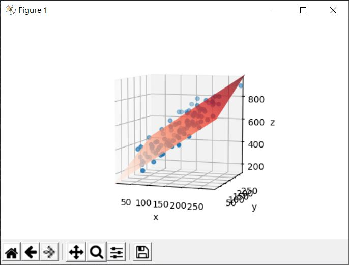

在〈多項式迴歸〉中想求得的迴歸函式是 x -> fΘ(x)，只有一個變數 x，如果想求得的迴歸函式不只有一個變數，這個任務稱為多元線性迴歸，也就是函式的形式會是 fΘ(x1, x2, x3, …) = Θ1 * x1 + Θ2 * x2 + Θ3 * x3。
遇到多元函式時，腦袋或許會一時當機，然而先從兩個變數開始，也就是 fΘ(x1, x2) = Θ1 * x1 + Θ2 * x2，如果兩個變數各表示空間的 x 與 y，而計算結果代表 z，不就是平面方程式嗎？
也就是說，若空間中散佈著一組點：
[
[180.81382149 2.01912626 444.75446169]
[ 29.38946937 180.38776789 431.49013503]
[ 68.19346217 157.16977084 503.50527714]
[ 77.42914051 74.85384854 334.95642501]
[ 13.15090257 77.22469551 122.27877554]
[119.07045075 87.30218615 522.81495852]
[184.35629535 200.15363538 702.41205539]
[ 73.01474307 85.12155386 372.027134 ]
[ 77.90825066 79.74688831 352.30507521]
....
]
使用散佈圖畫出來是這樣：
觀察點的散佈，大致上呈現某個線性趨勢，若打算求得多元線性迴歸，結果會是個平面函式，畫出來會像是：

想要透過程式庫來求多元線性迴歸，可以使用 sklearn 的 sklearn.linear_model.LinearRegression 物件，以下直接列出程式碼作為參考：
import numpy as np
import matplotlib.pyplot as plt
from matplotlib import cm
from sklearn.linear_model import LinearRegression
def points(start, end, step, noise, f):
n = (end - start) // step
x = np.arange(start, end, step) + np.random.rand(n) * noise
y = np.arange(start, end, step) + np.random.rand(n) * noise
z = f(x, y) + np.random.rand(n) * noise
return np.dstack((x, y, z))[0]
# 用來產生資料的平面函式
def f(x, y):
return 2 * x + y + 10
# 資料來源
data = points(0, 100, 1, 200, f)
xy = data[:,0:2] # 包含 [x, y] 的清單
z = data[:,2] # 包含 z 的清單
linreg = LinearRegression() # 負責線性迴歸
linreg = linreg.fit(xy, z) # 擬合
t1, t2 = linreg.coef_ # 係數
intercept = linreg.intercept_ # 截距
# 畫平面需要的資料
arange = np.arange(0, 300)
X, Y = np.meshgrid(arange, arange)
Z = X * t1 + Y * t2 + intercept # 平面方程式
ax = plt.axes(projection='3d')
ax.set_xlabel('x')
ax.set_ylabel('y')
ax.set_zlabel('z')
ax.set_box_aspect((1, 1, 1))
ax.scatter(data[:,0], data[:,1], data[:,2])
ax.plot_surface(X, Y, Z, cmap = cm.Reds)
plt.show()
若有一組 x、y 資料，想求得對應的 z 值，除了自行組合係數與截距之外，也可以透過 LinearRegression 的 predict 方法，例如：
# z_lt 是 [172.21473337 143.75287361 331.28569312 318.98911371]
z_lt = linreg.predict([[10, 20], [3, 3], [100, 2], [50, 99]])